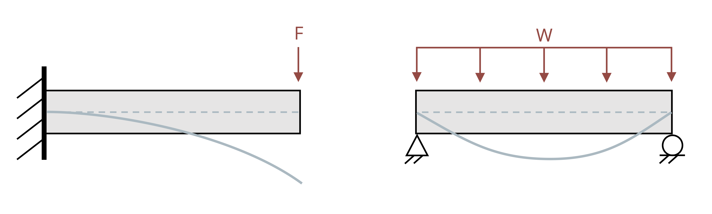
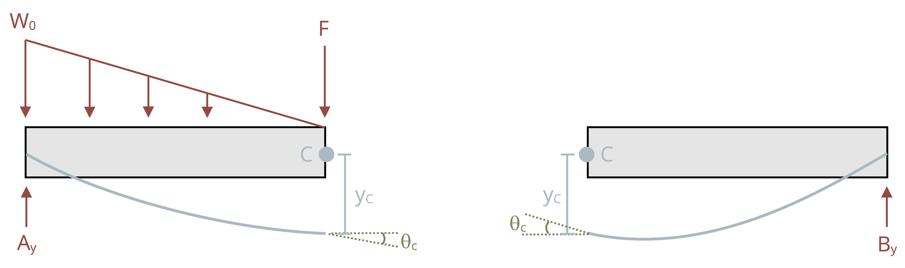

11 Beam Deflection
Introduction
Click to expand
We now know how to calculate both the bending stress (Chapter 9) and shear stress (Chapter 10) in a beam. In this chapter we’ll consider the deformation of a beam subjected to bending and shear stresses. Under load, beams deflect from their original position (Figure 11.1). Some amount of deflection is unavoidable, but it is usually desirable to limit deflection as much as possible. Although deflection often doesn’t pose a safety risk (unless the allowable stress of the beam is also exceeded) too much deflection can render a beam unfit for purpose.

Idealized sketches showing the shape of the deflected beam are a helpful visual aid. This deflected shape is known as the elastic curve (Figure 11.2). Sketches of the elastic curve provide a quick visual reference of how the beam will deflect and can be used to check that our numerical answers are realistic.

In section 5.3 we learned to calculate deformation due to axial load \(\left(\Delta L=\frac{F L}{A E}\right)\). In section 6.2 we learned to calculate deformation due to torsional load \(\left(\varnothing=\frac{T L}{J G}\right)\). Note that both types of deformation depend on:
Applied/internal load (F, T)
Length of the object (L)
Cross-section geometry (A, J)
Material properties (E, G)
It is probably not surprising then that beam deflection also depends on these four things. We’ll study two common techniques for calculating deflection: The method of integration (sections 11.1 and 11.2) and the method of superposition (section 11.3). Being able to calculate deflection is vitally important, as it allows us to predict how much a beam will deflect before we build a structure. Once we’re able to calculate deflection, we’ll use this to help solve some more statically indeterminate problems (Section 11.4). Finally, we’ll build on our beam design work of section 9.2 by expanding our specifications to include limitations on not just bending stress, but shear stress and deflection as well.
11.1 Integration of the Moment Equation
Click to expand
We’ll begin by deriving an equation for calculating the deflection at any point in a loaded beam. In Chapter 9, we derived two equations relating to bending stress.
\[ \sigma=-\frac{E y}{\rho} \]
\[ \sigma=-\frac{M y}{I} \]
Set these equations equal:
\[ \frac{E y}{\rho}=\frac{M y}{I} \]
Rearrange:
\[ \frac{1}{\rho}=\frac{M(x)}{E I} \]
The radius of curvature (ρ) can be related to the deflection (y) by the equation
\[ \frac{1}{\rho}=\frac{\frac{\partial^{2} y}{\partial x^{2}}}{\left[1+\left(\frac{\partial y}{\partial x}\right)^{2}\right]^{\frac{3}{2}}} \]
This equation describes the exact deflection \((y)\) at any distance \((x)\) along the beam. In most engineering applications the deflection \((y)\) is very small. We can simplify this equation significantly by assuming that our deflection \((y)\) will be small and thus that \(\frac{d y}{d x}\) is very small and \(\left(\frac{d y}{d x}\right)^{2}\) is negligible. This simplifies the equation to
\[ \frac{1}{\rho}=\frac{\frac{\partial^{2} y}{\partial x^{2}}}{[1+0]^{\frac{3}{2}}}=\frac{\partial^{2} y}{\partial x^{2}} \]
Finally
\[ \frac{1}{\rho}=\frac{\partial^{2} y}{\partial x^{2}}=\frac{M(x)}{E I} \]
To solve for deflection we can first find an equation for the internal bending moment as a function of \((x)\), using equilibrium just as we did in section 7.2 for drawing the bending moment diagram. We can then set this equation equal to \(E I \frac{d^{2} y}{d x^{2}}\) and integrate twice.
\[ \begin{gathered} M(x)=E I \frac{\partial^{2} y}{\partial x^{2}} \\ \int M(x) d x+C 1=E I \frac{\partial y}{\partial x} \\ \iint M(x) d x+C 1 x+C 2=E I y \end{gathered} \]
In these equations, \(y\) represents the deflection of the beam and \(\frac{d y}{d x}\) represents the slope of the deflected beam. Since the equations are functions of \(x\), we can find the slope and deflection at any point along the beam.
Note that each successive integral introduces a constant of integration which we must solve for. We do this through the use of boundary conditions—that is, points on the beam where we already know the slope and/or deflection. The most common boundary conditions for our applications will be:
At any support the deflection \((y)\) is zero
At a fixed support the slope \(\left(\frac{\partial y}{\partial x}\right)\) is zero
Figure 11.3 illustrates these boundary conditions. Once the constants of integration are known, we can define equations for the slope and deflection of the beam in terms of distance \((x)\) along the beam and calculate the slope and deflection at any value of \(x\). See Example 11.1 and Example 11.2 to see this process applied to a simply supported beam and a cantilever beam respectively.

A simply supported beam of length L = 10 m is subjected to a uniform distributed load of w = 20 kN/m. Determine the equation of the elastic curve and use this to find the deflection of the beam at the midpoint, x = 5 m. Assume E = 200 GPa and I = 350 x 106 mm4.

Sketch a free body diagram of the beam and use equilibrium equations to solve for the reaction forces at the supports:

\[ \begin{aligned} & \sum M_A=0: \quad-\omega L\left(\frac{L}{2}\right)+B L=0 \quad \rightarrow \quad B=\frac{\omega L}{2} \\ & \sum F y=0: \quad A-\omega L+\frac{\omega L}{2}=0 \rightarrow A=\frac{\omega L}{2} \\ & \end{aligned} \]
Cut a cross-section through the beam at distance x and draw a free body diagram of everything to the left of the cut, including the internal loads. Use equilibrium to determine an equation for the internal bending moment, M, as a function of x:

\[ \begin{gathered} \sum M_A=0: M+w x\left(\frac{x}{2}\right)-\frac{w L}{2}(x)=0 \\ M =\frac{w L x}{2}-\frac{w x^2}{2}=E I \frac{\partial^2 y}{\partial x^2}\end{gathered} \]
Integrate this equation twice:
\[ \begin{aligned} & \frac{w L x^2}{4}-\frac{w x^3}{6}+c_1=E I \frac{\partial y}{\partial x} \\ & \frac{w L x^3}{12}-\frac{w x^4}{24}+c_1 x+c_2=E I y\end{aligned} \]
Apply boundary conditions at the supports:
\[ \begin{aligned} & \text { At } x=0, y=0 \rightarrow C_2=0 \\ & \text { At } x=L, y=0 \rightarrow \frac{w L(L)^3}{12}-\frac{w(L)^4}{24}+C_1 L=0 \\ & C_1=\frac{w L^3}{24}-\frac{wL^3}{12}=-\frac{w L^3}{24}\end{aligned} \]
Substitute these constants into the deflection equation and rearrange:
\[ y=\frac{1}{E I}\left[\frac{w L x^3}{12}-\frac{w x^4}{24}-\frac{wL^3}{24} x\right] \]
Substitute in the given values for and solve this equation at the midpoint (x=5m):
\[ \begin{aligned} & y=\frac{1}{200 \times 10^9 \times 350 \times 10^{-6}}\left[\frac{20000 \times 10 \times 5^3}{12}-\frac{20000 \times 5^4}{24}-\frac{20000 \times 10^3 \times 5}{24}\right] \\ & y=-0.0372 \mathrm{~m} \\ & y=-37.2 \mathrm{~mm}\end{aligned} \]
A cantilever beam of length L = 8 ft is subjected to a linear distributed load where w0 = 30 kip/ft. Determine the equation of the elastic curve and use this to find the deflection of the beam at the free end. Assume E = 29 x 106 psi and I = 375 in.4.

Cut a cross-section through the beam at distance x and draw a free body diagram of everything to the left of the cut, including the internal loads. This diagram won’t include any of the reactions at the fixed support so there’s no need to solve for these first. Use equilibrium to determine an equation for the internal bending moment, M, as a function of x. Then integrate this equation twice:

\[ \begin{gathered} \sum M_x=0: \quad M+\frac{w_0 x^2}{2 L}\left(\frac{x}{3}\right)=0 \\ M=-\frac{w_0 x^3}{6 L}=E I \frac{\partial^2 y}{\partial x^2} \\ -\frac{w_0 x^4}{24 L}+C_1=E I \frac{\partial y}{\partial x} \\ -\frac{w_0 x^5}{120 L}+C_1 x+C_2=EIy\end{gathered} \]
Apply boundary conditions at the fixed support:
\[ \begin{gathered} \text { At } x=L, \frac{\partial y}{\partial x}=0 \quad \rightarrow \quad \frac{w_0 L^4}{24 L}+C_1=0 \\ c_1=\frac{w_0 L^3}{24} \\ \text { At } x=L, y=0 \quad \rightarrow \quad \frac{w_0 L^5}{120 L}+\frac{w_0 L^3}{24}(L)+C_2=0 \\ C_2=\frac{w_0 L^4}{120}-\frac{w_0 L^4}{24}=-\frac{4 w_0 L^4}{120}=-\frac{w_0 L^4}{30} \end{gathered} \]
Substitute these constants into the deflection equation and rearrange:
\[ y=\frac{1}{E I}\left[-\frac{w_0 x^5}{120L}+\frac{w_0 L^3}{24} x-\frac{w_0 L^4}{30}\right] \]
Substitute in the given values and solve this equation at the free end (x = 0). Remember to convert feet to inches in both the distributed load and the length:
\[ \begin{aligned} & y=\frac{1}{29 \times 10^6 \times 375} \left[-\frac{\frac{30000}{12} \times (8\times12)^4}{30}\right] \\ & y=- 0.651 \mathrm{~in.}\end{aligned} \]
The above examples have single continuous loads. If the loading is discontinuous we must modify our approach as there will not be one single moment equation that describes the entire beam. We saw in section 7.2 when drawing shear force & bending moment diagrams that we can find a different equation for the internal bending moment in each loading region (i.e., a piecewise function over the length of the beam). We must find separate moment equations for each loading region and integrate each separately. This must be done each time the loading changes (a discontinuity in the moment diagram), such as:
Both sides of a concentrated load
Whenever a distributed load begins or ends
See Example 11.3 for an example of a beam with 2 loading regions. Note that in this example we will need to determine 2 internal bending moment equations and integrate each equation twice, thereby introducing four constants of integration. Two of these can still be determined by using boundary conditions, but we still need to determine the other two. This is done with continuity conditions.
Equation set 1 describes the internal moment, slope, and deflection of the beam from point A to point B, and equation set 2 describes the internal moment, slope, and deflection from point B to point C. Note that both sets of equations describe point B, where the loading changes. They must therefore return the same results at point B. We can therefore say that
\[ \begin{aligned} \left(\frac{\partial y}{\partial x}\right)_{1} & =\left(\frac{\partial y}{\partial x}\right)_{2} \\ y_{1} & =y_{2} \end{aligned} \]
A simply supported beam is subjected to a distributed load of w = 20 kN/m as shown. Determine the equation of the elastic curve between 0 ≤ x ≤ 6 m and between 6 m ≤ x ≤ 9m.
Then determine the deflection at x = 5m. Assume E = 200 GPa and I = 394 x 106 mm4.

Sketch a free body diagram of the beam, and use equilibrium equations to solve for the reaction forces at the supports:

\[ \begin{aligned} & \sum M_A=0: \quad -(120 \times 3)+(B+9)=0 \quad \rightarrow \quad B=40 \mathrm{~kN} \\ & \sum F y=0: \quad A-120+40=0 \quad \rightarrow \quad A=80 \mathrm{~kN}\end{aligned} \]
Cut a cross-section in the first loading region at distance x1. Draw a free body diagram of everything to the left of this cut, including the internal loads. Use equilibrium to determine an equation for the internal bending moment, M1, as a function of x1. Then integrate this equation twice:

\[ \begin{gathered} \sum M_x=0: \quad M_1+20 x_1\left(\frac{x_1}{2}\right)-80 x_1=0 \\ M_1=80 x_1-10 x_1^2=E I \frac{\partial^2 y_1}{\partial x_1^2} \\ \frac{80 x_1^2}{2}-\frac{10 x_1^3}{3}+c_1=E I \frac{\partial y_1}{\partial x_1} \\ \frac{80 x_1^3}{6}-\frac{10 x_1^4}{12}+C_1 x_1+c_2=E I y_1\end{gathered} \]
These equations are valid from 0 ≤ x1 ≤ 6m.
Set these equations aside and cut a cross-section in the second loading region at distance x2. Draw a free body diagram of everything to the left of this cut, including the internal loads. Use equilibrium to determine an equation for the internal bending moment, M2, as a function of x2. Then integrate this equation twice:

\[ \begin{gathered} \Sigma M_x=0: \quad M_2+120\left(x_2-3\right)-80 x_2=0 \\ M_2 =80 x_2-120 x_2+360 \\ M_2 =360-40 x_2=E I \frac{\partial^2 y_2}{\partial x_2^2} \\ 360 x_2-\frac{40 x_2^2}{2}+c_3=E I \frac{\partial y_2}{\partial x_2} \\ \frac{360 x_2^2}{2}-\frac{40 x_2^3}{6}+c_3 x_3+c_4 =E I y_2\end{gathered} \]
These equations are valid from 6m ≤ x2 ≤ 9m:
Apply bounding conditions at the supports. One support is in loading region 1 while the other is in region 2. Be careful to use the appropriate deflection equation when applying the boundary conditions:
\[ \begin{aligned} & \text { At } x_1=0, y_1=0 \quad \rightarrow \quad c_2=0 \\ & \text { At } x_2=9, y_2=0 \quad \rightarrow \quad \frac{360(9)^2}{2}-\frac{40(4)^3}{6}+c_3(9) +C_4=0 \\ & c_4=-9 c_3-9720\end{aligned} \]
Apply continuity conditions at the point where the loading changes (x1 = x2 = 6 m):
\[ \begin{gathered} \text { At } x_1=x_2=6 \mathrm{~m}, \frac{\partial y_1}{\partial x_1}=\frac{\partial y_2}{\partial x_2} \quad \rightarrow \quad \frac{80(6)^2}{2}-\frac{10(6)^3}{3}+c_1=360(6)-\frac{40(6)^2}{2}+c_3 \\ 1440-720+c_1=2160-720+c_3 \\ C_1=720+C_3 \\ \\ \text { At } x_1=x_2=6 \mathrm{~m}, y_1=y_2 \quad \rightarrow \quad\frac{80(6)^3}{6}-\frac{10(6)^4}{12}+c_1(6)=\frac{360(6)^2}{2} - \frac{40(6)^3}{6}+c_3(6) +C_4 \\ 2880-1080+6 C_1=6480-1440+6 C_3+C_4 \\ 1800+6 C_1=5040+6 C_3+C_4 \\\end{gathered} \]
Substitute in C4 = -9C3 - 9720 and C1 = 720 + C3
\[ \begin{gathered}1800+6\left(720+c_3\right)=5040+6 c_3+c_4 \\1800+4320+6 c_3=5040+6 c_3+c_4 \\6120-5040=c_4 \\c_4=1080 \\\\\end{gathered}\\ \begin{gathered}c_4=-9 c_3-4720 \\c_3=\frac{-1080-9720}{9} \\c_3=-1200 \\\\\end{gathered}\\\begin{gathered}c_1=720+c_3=720-1200 \\c_1=-480\end{gathered} \] Substitute constants into deflection equations:
\[ \begin{aligned}y_1 & =\frac{1}{E I}\left[\frac{80 x_1^3}{6}-\frac{10 x_1^4}{12}-480 x_1\right] \\y_2 & =\frac{1}{E I}\left[\frac{360 x_2^2}{2}-\frac{40 x_2^3}{6}+1200 x_3+1080\right]\end{aligned} \]
Deflection at midpoint occurs when x1 = 5m:
\[ \begin{aligned}y_1=\frac{1}{EI} & {\left[\frac{80(5)^3}{6}-\frac{10(5)^4}{12}-480(5)\right]=-\frac{1254 \times 10^3}{200 \times 10^9 \times 394 \times 10^{-6}} } \\y_1 & =-0.0159 \mathrm{~m} \\& =-15.9 \mathrm{~mm}\end{aligned} \]
It is not required that we make both cuts from the left. In some cases it may be easier to make one cut from the left and the other from the right. Consider the simple beam in Figure 11.4. When making a cut in the region not under the distributed load, a free body diagram to the left of the cut has many more forces than a free body diagram of the right side.

The moment equation will be much simpler if we draw the right hand side of the cut. This in turn simplifies the integrations and the math involved in finding the constants of integration. We must however make one change to our continuity conditions if we measure distance x2 from the right. When making both cuts from the left we said that at point C the slope and deflection from calculated from equation 1 must be the same as those calculated from equation 2.
\[ \begin{aligned} \left(\frac{d y}{d x}\right)_{1} & =\left(\frac{d y}{d x}\right)_{2} \\ y_{1} & =y_{2} \end{aligned} \]
When measuring distance x2 from the right, it is still true at point C that [math] as the deflection is still downwards regardless of whether we measure our horizontal distance from the left or right. The magnitude of the slope will also be the same at point C regardless of which equation we use to calculate it. However, the direction of rotation of the slope will change from counter-clockwise to clockwise due to us changing the coordinate system (Figure 11.5). Thus our second boundary condition must become
\[ \left(\frac{d y}{d x}\right)_{1}=-\left(\frac{d y}{d x}\right)_{2} \]

This negative sign is vitally important, and we will not get the correct answer if we forget to include it. Example 11.3 has been reworked below, this time with one cut made from the right hand side instead. Compare to the previous solution to see the differences.
A simply supported beam is subjected to a distributed load of w = 20 kN/m as shown. Determine the equation of the elastic curve between 0 ≤ x ≤ 6 m and between 6 m ≤ x ≤ 9m.
Then determine the deflection at x = 5m. Assume E = 200 GPa and I = 394 x 106 mm4.
Proceed through first cut as before and find:
\[ \begin{aligned} & \frac{80 x_1^2}{2}-\frac{10 x_1^3}{3}+c_1=EI\frac{\partial y_1}{\partial x_1} \\ & \frac{80 x_1^3}{6}-\frac{10 x_1^4}{12}+c_1 x_1+c_2=-EI y_1\end{aligned} \]
Make second cut from right-hand-side. Draw a free body diagram and use equilibrium to determine an equation for the internal bending moment, M2, as a function of x2. Then integrate this equation twice.

\[ \begin{gathered} \sum M_x=0: \quad 40 x_2-M_2=0 \\ M_2=40 x_2=EI\frac{\partial^2 y_2}{\partial x_2{ }^2} \\ \frac{40 x_2^2}{2}+c_3=EI \frac{\partial y_2}{\partial x_2} \\ \frac{40 x_2^3}{6}+c_3 x_2+c_4=E I y_2 \\ \end{gathered} \]Apply boundary conditions as before, although this time the roller support is at x2 = 0 since we’re measuring x2 from the right side:
\[ \begin{aligned} & \text { At } x_1=0, y_1=0 \quad \rightarrow \quad c_2=0 \text { (as before) }\\ & \text { At } x_2=0, y_2=0 \quad \rightarrow \quad c_4=0\end{aligned} \]
Apply continuity conditions at the point where the loading changes (x1 = 6 m, x2 = 3 m):
\[ \begin{gathered} \text { At } x_1=6 \mathrm{~m}, x_2=3 \mathrm{~m}, y_1=y_2 \rightarrow \frac{80(6)^3}{6}-\frac{10(6)^4}{12}+ c_1(6)=\frac{40(3)^3}{6}+c_3(3) \\ 2880-1080+6 c_1=180+3 c_3 \\ 540+2 c_1=c_3 \\ \\ \text { At } x_1=6 \mathrm{~m}, x_2=3 \mathrm{m}, \frac{d y_1}{d x_1}=-\frac{d y_2}{d x_2} \rightarrow \frac{80(6)^2}{2}-\frac{10(6)^3}{3}+c_1=-\frac{40(3)^2}{2}-c_3 \\ 1440-720+c_1=-180-c_3 \\ 900+c_1=-c_3 \\\end{gathered} \]
Substitute in 540 + 2c1 = c3:
\[ \begin{aligned} 540+2 c_1 & =-900-c_1 \\ 3 c_1 & =-1440 \\ c_1 & =-480 \text { (as before) }\end{aligned} \]
\[ \begin{aligned} 900-480 & =-c_3 \\ c_3 & =-420\end{aligned} \]
Substitute constants into deflection equations:
\[ \begin{aligned} & y_1=\frac{1}{EI}\left[\frac{80 x_1^3}{6}-\frac{10 x_1^4}{12}-480 x_1\right] \quad \text { (as before) } \\ & y_2=\frac{1}{E I}\left[\frac{40 x_2^3}{6}-420 x_2\right]\end{aligned} \]
Deflection at midpoint occurs when x1 = 5m:
\[ \begin{aligned}y_1=\frac{1}{EI} & {\left[\frac{80(5)^3}{6}-\frac{10(5)^4}{12}-480(5)\right]=-\frac{1254 \times 10^3}{200 \times 10^9 \times 394 \times 10^{-6}} } \\y_1 & =-0.0159 \mathrm{~m} \\& =-15.9 \mathrm{~mm}\end{aligned} \]
11.2 Integration of the Load Equation
Click to expand
In section 11.1 we used equilibrium equations to determine the internal bending moment in a beam as a function of x. We related this bending moment to the deflection by
\[ M(x)=E I \frac{d^{2} y}{d x^{2}} \]
In section 7.3 we learned that there is a relationship between the internal bending moment, the internal shear force, and the external load. For an external distributed load, w, we found
\[ V=\int_{0}^{L} w(x) d x \]
\[ M=\int_{0}^{L} V(x) d x \]
We may therefore relate the deflection of a beam to not only the internal bending moment, but also the internal shear force and external distributed load through successive integrations. For some loading configurations it can be much simpler to integrate the distributed load equation 4 times instead of finding the equation of the internal bending moment through equilibrium and integrating twice. When doing this, remember that loads acting downwards (as most loads on beams do) are negative.
\[ \begin{gathered} w(x)=E I \frac{d^{4} y}{d x^{4}} \\ V(x)=E I \frac{d^{3} y}{d x^{3}}=\int w(x) d x+C 1 \\ M(x)=E I \frac{d^{2} y}{d x^{2}}=\int V(x) d x+C 2 \\ \theta(x)=E I \frac{d y}{d x}=\int M(x) d x+C 3 \\ y(x)=\int \theta(x) d x+C 4 \end{gathered} \]
Note that each successive integral will introduce a new constant of integration. We must again apply boundary conditions in order to solve for these constants. There are now four constants so we require four boundary conditions. Two of these are the same as in section 11.1:
At any support the deflection is 0
At a fixed support, both the slope and deflection are zero
The other two boundary conditions come from knowing the value of the shear force and bending moment at a point in the beam. We are able to find these from our work in chapter 7. While we can use known values at any point in the beam, it is generally easiest to use the shear force and bending moment at x = 0. At this point:
The shear force will be equal to the applied force (including a force applied by a support) if there is one, or zero otherwise.
The bending moment will be equal to the applied moment (including a moment applied by a fixed support) if there is one, or zero otherwise.
See Example 11.4 for a demonstration of how to find the deflection of a beam by integrating the load equation. Note that while this method can be used for any beam, it is best applied to beams with a single continuous distributed load acting over the length of the beam. Beams with discontinuous loading will require integration of multiple load equations.
A cantilever beam from Example 11.2 is repeated here. Length L = 8 ft is subjected to a linear distributed load where w0 = 30 kip/ft. Determine the equation of the elastic curve and use this to find the deflection of the beam at the free end.

11.3 Superposition
Click to expand
It should be apparent from the previous sections that finding deflection using the method of integration can become quite complicated and time-consuming if there are multiple loads. In such cases, the method of superposition is a good alternative.
Beams are typically loaded in a relatively small number of standard configurations, and the deflection behavior of a beam subjected to one of these standard loads is very well understood. A subset of beam deflections have been included in Appendix C. Figure 11.6 shows an example of the information provided for one such beam.

This can be useful even for more complex loading. When multiple loads act on a beam, the effect of each load on the deflection of the beam may be considered independently. Thus, even for loading more complex than the loads in Appendix C, it may be possible to simplify the problem by considering each load separately and calculating the deflection caused at a point by each load (Figure 11.7). These deflections can then be added together to find the overall deflection at that point. We must of course calculate the deflection at the same point for each load in order to add them together. See Example 11.5 for a demonstration.

\[ \begin{aligned} y_w = - \frac{wL^4}{8EI} \quad \quad \quad \quad \quad \quad \quad \quad \quad \quad &\quad \quad \quad \quad \quad \quad \quad \quad \quad \quad y_F=-\frac{FL^3}{3EI} \\ y_{max}=-&\frac{wL^4}{8EI} - \frac{FL^3}{3EI} \end{aligned} \]
A simply supported beam is subjected to a distributed load w = 10 kN/m and a concentrated load F = 50 kN. If distance a = 6 m and b = 2 m, determine the deflection at the midpoint of the beam (x = 4 m).
Assume E = 210 GPa and I = 275 x 106 mm4.

Consider each load separately. We’ll start with the distributed load (although this can be done in any order).

From Appendix C we can see that the maximum deflection for this load occurs at the center of the beam, which is the point we’re interested in.
\[ \begin{aligned} y=-\frac{5 w L^4}{384 E I}=-\frac{5 \times 20000 \times 8^4}{384 \times 210 \times 10^9 \times 275 \times 10^{-6}} & =-0.01847 \mathrm{~m} \\ & =-18.47 \mathrm{~mm}\end{aligned} \]
Now consider the concentrated load

Here the maximum deflection does not occur at the center of the beam. We can use the elastic curve equation for x < a to find the deflection at x = 4 m when the load is applied at a = 6 m.
\[ \begin{aligned} y=\frac{F b}{6 E I L}\left[x^3-\left(L^2-b^2\right) x\right] & =\frac{50000 \times 2}{6 \times 210 \times 10^9 \times 275 \times 10^{-6} \times 8}\left[4^3-\left(8^2-2^2\right) 4\right] \\ & =-0.00635 \mathrm{~m} \\ & =-6.35 \mathrm{~mm}\end{aligned} \]
The total deflection at the midpoint of the beam is
\[ \begin{aligned} & y=-18.47-6.35 \mathrm{~mm} \\ & y=-24.8 \mathrm{~mm}\end{aligned} \]
11.4 Statically Indeterminate Deflection
Click to expand
A problem is statically indeterminate if there are more unknown support reactions than there are equilibrium equations to solve for them. We have seen statically indeterminate problems in section 5.5 and section 6.4. In both sections we used a similar method to solve statically indeterminate problems where we took advantage of our knowledge of deformation in order to solve for one of the reaction forces before using equilibrium equations to find the others. We’ll do something similar here. We may use either an integration method similar to that of section 11.1 or a superposition method similar to that of section 11.3.
In practice, engineers design structures with redundancies so that if one part fails it can be replaced without the entire structure collapsing. As such, static indeterminacy is the norm.
In section 11.1 we cut a cross-section and found the internal bending moment as a function of x, M = f(x). We integrated this twice to determine the equation of the elastic curve. For statically indeterminate problems, we will write our moment equation as a function of both x and A, where A is the unknown force at the redundant support. After integrating this equation twice we will have three unknowns, but also three boundary conditions. We will therefore be able to solve for the redundant reaction force and then use equilibrium equations to solve for the other reactions. See Example 11.6.
A propped cantilever beam of length L = 6 ft is subjected to a linear distributed load where w0 = 20 kips/ft. Determine the reactions at supports A and B.

A free body diagram of the beam shows that we have 4 unknowns and only 3 equilibrium equations. We can solve \(\sum F_x=0\) to find \(B_x = 0\), but that still leaves us with 3 unknowns and 2 equations.

Cut a cross-section and determine the internal bending moment in terms of distance x and redundant force Ay. Set this equation equal to \(EI\frac{\partial^2 y}{\partial x^2}\) and integrate twice:

\[ \begin{gathered} \sum M_x=0: \quad M+\frac{w_0 x^2}{2 L}\left(\frac{x}{3}\right)-A_y x=0 \\ M=A_y x-\frac{w_0 x^3}{6 L}=EI \frac{\partial^2 y}{\partial x^2} \\ \frac{A_y x^2}{2}-\frac{w_0 x^4}{24 L}+c_1=E I \frac{\partial y}{\partial x} \\ \frac{A_y x^3}{6}-\frac{w_0 x^5}{120 L}+c_1 x+c_2=E I y\end{gathered} \]
We have 3 unknowns (Ay, c1, c2) and 3 boundary conditions (at the roller, deflection equals zero. At the fixed support, both slope and deflection equal zero). Apply the boundary conditions:
\[ \begin{aligned} & \text { At } x=0, y=0 \quad \rightarrow \quad c_2=0 \\ & \text { At } x=L, y=0 \quad \rightarrow \quad \frac{A_y L^3}{6}-\frac{w_0 L^4}{120}+c_1 L=0 \\ & \text { At } x=L, \frac{\partial y}{\partial x}=0 \quad \rightarrow \quad \frac{A y L^2}{2}-\frac{w_0 L^3}{24}+c_1=0\end{aligned} \]
Rearrange and substitute:
\[ \begin{gathered}c_1=\frac{w_{0 L}{ }^3}{24}-\frac{A_y L^2}{2} \\ \frac{A_y L^3}{6}-\frac{w_0 L^4}{120}+\frac{w_0 L^4}{24}-\frac{A_y L^3}{2}=0 \\ \frac{-2 A_y L^3}{6}+\frac{4 w_{0} L^4}{120}=0 \\ A_y=\frac{w_0 L}{10}\end{gathered} \]
We can now reach a numerical answer and find the other reactions by equilibrium.

\[ \begin{aligned} & A_y=\frac{20 \times 6}{10}=12 \text { kips } \\ \\ & \sum F_y=0: \quad 12-60+B_y=0 \quad \rightarrow \quad B y=48 \text { kips } \\ & \sum M_A=0: \quad (10 \times 4)+\left(48+6\right)-M_B=0 \quad \rightarrow \quad M_B=48 \text{ kip·ft} \\ & \end{aligned} \]
This method works well for beams with a single continuous load. While it can be used for more complex loads, it quickly becomes complicated and time consuming. For these problems it is generally better to use superposition.
The method is very similar to the methods used to solve other statically indeterminate problems in section 5.5 and section 6.4. To solve a statically indeterminate deflection problem using superposition, first identify the redundant support. We have 3 equilibrium equations and so can solve for three unknown support reactions. Any support reactions beyond this are redundant. Remove the redundant reaction and determine the deflection due to the applied loads at the point that the reaction was removed. It is best to remove a support such that the remaining beam is either simply supported or cantilever as these are the only support configuration in Appendix C.
Then replace the redundant reaction and determine the deflection due to this reaction and the point that the reaction is applied. Since there is actually a support here, the total deflection must be zero. Sum both deflections and set them equal to zero. This will allow you to calculate the value of the redundant support. Once this is known the other reaction loads can be determined using equilibrium. See Example 11.7 for a demonstration.
The propped cantilever beam of Example 11.6 is shown again here. If length L = 6 ft is subjected to a linear distributed load where w0 = 20 kips/ft. Determine the reactions at supports A and B.

As demonstrated in Example 11.6, this problem is statically indeterminate.
This time, let’s remove redundant support Ay and use Appendix C to find the deflection at point A.

\[ y_{A_1}=-\frac{w_0 L^4}{30 E I} \]
Now replace Ay and use Appendix C to find the deflection at point A caused by Ay.

\[ y_{A_2}=\frac{A_{y L}{ }^3}{3 E I} \]
Since there is actually a support at A, the deflection at A must be zero.
\[ -\frac{w_0 L^4}{30 E I}+\frac{A_y L^3}{3EI}=0 \quad \rightarrow \quad A_y=\frac{W_0 L}{10} \]
This is the same answer we found in Example 11.6, and the rest of the problem proceeds in the same way.
It is possible to remove a moment reaction in order to leave a simply supported beam. In this case, determining the deflection at the point that the load was removed isn’t helpful as removing the moment reaction from a fixed support effectively leaves a pin support and the deflection with the moment removed will still be zero. In this situation we can instead look at the slope at the point that the reaction was removed. Example 11.7 is repeated below with the moment at B removed instead of the force at A.
The propped cantilever beam of Example 11.6 is shown again here. If length L = 6 ft is subjected to a linear distributed load where w0 = 20 kips/ft. Determine the reactions at supports A and B.
This time we’ll remove the moment reaction at B to leave a simply supported beam.

Finding the deflection at B would not help as it would simply be zero. Instead, use Appendix C to find the slope at B.
\[ \theta_B=\frac{W_0 L^3}{45 E I} \]
Now replace the moment reaction at B and use Appendix C to find the slope at B due to this moment.

\[ \theta_B=-\frac{M_B L}{3 E I} \]
Since there is actually a fixed support at B, the slope here must be zero.
\[ \begin{aligned} &\frac{W_0 L^3}{45 E I}-\frac{M_{B L}}{3 E I}=0 \\ &M_B =\frac{W_0 L^2}{15}\end{aligned} \]
Adding numbers we get:
\[ M_B=\frac{20 \times 6^2}{15}=48 \text{ kip·ft} \]
Which is the same answer we found in Example 11.6. Reactions Ay and By can be found by equilibrium and will also give the same answers as Example 11.6.
Note that some problems may involve multiple redundant reactions. In such cases, remove all redundant reactions and determine the deflection due to the external loads at every point that a reaction was removed. Then replace the redundant reactions one at a time and determine the deflection due to each load at every point that a reaction was removed. As before, the total deflection at each of these points must be zero. Sum the deflection at each point and set it equal to zero. There will be one equation for every redundant reaction and so all redundant reactions can be calculated.
11.5 Intermediate Beam design
Click to expand
In Section 9.2 we learned how to use the section modulus to design a beam to meet bending stress specifications. In practice, beams must also meet specifications for shear stress and deflection. Limitations will be placed on all three of these criteria and we must design our beams to meet all three simultaneously. We’ll begin with rectangular cross-sections and then move on to W beams.
As in section 9.2, problems involving rectangular cross-sections will typically relate the base and height of the cross-section such that we only need to determine one dimension. Previously we designed the cross-section to resist bending stress using:
\[ S_{\min }=\frac{M_{\max }}{\sigma_{\text {allow }}}=\frac{I}{c} \]
Since \(I=\frac{b h^{3}}{12}\) and \(c=\frac{h}{2}\) we were able to determine the required dimensions to meet the minimum required section modulus. The equation \(S=\frac{I}{c}\) will simplify to \(S=\frac{\frac{b h^{3}}{12}}{\frac{h}{2}}=\frac{2 b h^{3}}{12 h}=\frac{b h^{2}}{6}\) for a rectangle.
To meet the minimum required shear stress we will use \(\tau=\frac{V Q}{I t}\). Using the method of section 10.1, it can be shown for a rectangle (Figure 11.8) that \(Q=y A=\frac{h}{4} \frac{b h}{2}=\frac{b h^{2}}{8}\). Since \(I=\frac{b h^{3}}{12}\) and \(\mathrm{t}=\mathrm{b}\), we can re-write the shear stress equation to find the maximum shear stress in a rectangular cross-section as \(\tau_{\max }=\frac{V \frac{b h^{2}}{8}}{\frac{b h^{3}}{12} b}=\frac{12 V b h^{2}}{8 b^{2} h^{3}}=\frac{12 V}{8 b h}=\frac{3}{2} \frac{V}{A}\).

Thus we may set \(\tau_{\max }=\frac{3}{2} \frac{V}{A}\) and solve for the required dimensions to not exceed the maximum allowable shear stress.
The maximum deflection of the beam under a given loading configuration can be found using the methods of this chapter. Wherever possible, use superposition and Appendix C. If it is not possible to use Appendix C then the method of integration can be used instead. In either case the equation for the maximum deflection of the beam will include the area moment of inertia, I. Set the maximum allowable deflection equal to this equation and replace \(I=\frac{b h^{3}}{12}\). We can then solve for the required dimensions of the cross-section to not exceed the maximum allowable deflection of the beam.
We now have three different dimensions—one required to not exceed the maximum bending stress, one required to not exceed the maximum shear stress, and one required to not exceed the maximum deflection. Since we must not exceed any of these limitation, we select the largest of our three potential answers. See Example 11.8 for a demonstration.
The simply supported wooden beam (E = 1700 ksi) of length L = 12 ft is subjected to a uniform distributed load of w = 1.5 kips/ft.
Assume the beam has an allowable bending stress of 900 psi, an allowable shear stress of 180 psi, and the deflection is limited to beam span / 240.
The beam has a rectangular cross-section where h = 1.5b. Determine the minimum required dimensions of the beam’s cross-section to meet these specifications. Give your answer rounded up to the nearest inch to allow for realistic manufacturing tolerances.

Start by drawing shear force and bending moment diagrams to determine the maximum internal loads:

Vmax = 9 kips
Mmax = 27 kip·ft
Design for bending by using the minimum required section modulus, Smin:
\[ \begin{aligned} S_{\min }=\frac{M_{\max }}{\sigma_{\text {allow}}} & =\frac{27000 \times 12}{900}=360 \mathrm{~in.}^3 \\ 360=\frac{b h^2}{6} & =\frac{b(1.5b)^2}{6}=\frac{2.25 \mathrm{~b}^3}{6} \\ b & =9.805 \mathrm{~in.}\end{aligned} \]
Design for shear:
\[ \begin{aligned} & \tau_{\text {max }}=\frac{3}{2} \frac{V}{A} \\ & 180=\frac{3}{2} \times \frac{9000}{A} \\ & A=\frac{3}{2} \times \frac{9000}{180}=b h=b(1.5 b)=1.5 b^2 \\ & b=7.071 \mathrm{~in.}\end{aligned} \]
Design for deflection:
From Appendix C,
\[ y_{\max }=- \frac{5 w L^4}{384 E I} \]
\[ \begin{gathered}-\frac{\text { Span }}{240}=-\frac{(12 \times 12)}{240}=-\frac{5 \times \frac{1500}{12} \times(12 \times 12)^4}{384 \times 1700000 \times I} \\ I=\frac{bh^3}{12}=\frac{b(1.5b)^3}{12}=\frac{3.375b^4}{12}=\frac{5 \times \frac{1500}{12}+(12 \times 12)^4}{384 \times 1700000} \times \frac{240}{12 \times 12} \\ b=7.028 \mathrm{~in.}\end{gathered} \]
We must select the largest dimension in order to meet all these criteria
\[ \begin{aligned} & b_{\text {req }}=9.865 \mathrm{~in.} \\ & h_{\text {req }}=14.8 \mathrm{~in.}\end{aligned} \]
To the next nearest inch:
\[ \begin{aligned} & b_{\text {req }}=10 \mathrm{~in.} \\ & h_{\text req }=15 \mathrm{~in.}\end{aligned} \]
For W beams we can again use the method of section 9.2 to select a beam from Appendix A that meets the specifications for bending stress. Use \(S_{\min }=\frac{M_{\max }}{\sigma_{\text {allow }}}\) and select a beam with \(\mathrm{S}>\mathrm{S}_{\min }\).
Next determine the equation for the maximum deflection of the beam under the given loading conditions. As before, use superposition and Appendix C whenever possible. Set the maximum allowable deflection equal to this equation and solve for the minimum required area moment of inertia, \(I_{\min }\). Now select the lightest beam from Appendix A that meets both \(S_{\min }\) and \(I_{\min }\).
Steel W beams rarely fail due to shear stress, but shear must still be checked. An exact value for the maximum shear stress in the beam can be found from \(\tau_{\max }=\frac{V Q}{I t}\). However, most of the shear stress is resisted by the web of the beam. A reasonable estimate of the maximum shear stress can be found using \(\tau_{\text {estimate }}=\frac{V}{A_{w e b}}\). This calculation is much simpler, but it is important to note that it is only an estimate. In most cases the maximum shear stress will be significantly less than the allowable shear stress and this estimate will suffice to demonstrate that. In the rare case that the maximum shear stress is within 20% of the allowable shear stress, an exact value must be determined using \(\tau_{\max }=\frac{V Q}{I t}\). The beam was already selected to meet the bending stress and deflection requirements. As long as the maximum shear stress is less than the allowable shear stress, the beam can be used. See Example 11.9 for a demonstration.
A steel (E = 210 GPa) W-beam of length L = 10 m will need to support the load shown, where w = 5 kN/m and F = 100 kN.
Assume the beam has an allowable bending stress of 150 MPa, an allowable shear stress of 100 MPa, and the maximum deflection is limited to 40 mm.
Select the lightest weight W-beam from Appendix A that meets these specifications.

Load is symmetric, so each support will hold half the load. Draw shear force and bending moment diagrams to find the maximum internal loads.

Vmax = 75 kN
Mmax = 312.5 kN·m
Design for bending by using the minimum required section modulus Smin:
\[ \begin{aligned} S_{\text {min }}=\frac{M_{\text {max }}}{\sigma_{\text {Allow }}}=\frac{312.5 \times 10^3}{150 \times 10^6} & =0.002083 \mathrm{~m}^3 \\ & =2083 \times 10^3 \mathrm{~mm}^3 \\ & \end{aligned} \]
Design for deflection:
We know the maximum deflection is limited to 40 mm (0.04 m) and the beam will deflect downward. From Appendix C we can see the maximum deflection for both the concentrated load and the distributed load occur in the same place. We can therefore add the two maximum deflection equations together and solve for the area moment of inertia.
\[ \begin{aligned} & \begin{aligned} y_{\text {max }} & = -0.04=-\frac{5 w L^4}{384 E^2 I}-\frac{F L^3}{48 E I} \\ I_{\text {req }}= & \frac{1}{0.04}\left[\frac{5 \times 5000 \times 10^4}{384 \times 210 \times 10^9}+\frac{100000 \times 10^3}{48 \times 210 \times 10^9}\right] \\ I_{\text {req }} & =0.0003255 \mathrm{~m}^4 \\ = & 325.5 \times 10^6 \mathrm{~mm}^4\end{aligned}\end{aligned} \]
Select lightest beam from Appendix A with
\[ \begin{aligned} & S>2083\times10^3 \mathrm{~mm}^3 \\ & I>325.5\times10^6 \mathrm{~mm}^4\end{aligned} \]
Options include:
\[ \begin{aligned}&W310\times143\quad(S=2150\times10^3~mm^3,I=347\times10^6~mm^4)\\ &W360\times216\quad(S=3800\times10^3~mm^3,I=712\times10^6~mm^4)\\ &W410\times114\quad(S=2200\times10^3~mm^3,I=462\times10^6~mm^4)\\ &W460\times113\quad(S=2390\times10^3~mm^3,I=554\times10^6~mm^4)\\ &W530\times150\quad(S=3720\times10^3~mm^3,I=1010\times10^6~mm^4)\\ &W610\times101\quad(S=2520\times10^3~mm^3,I=762\times10^6~mm^4)\end{aligned} \]
Select the lightest of these beams.
Use W610 x 101.
Check the estimated shear stress to make sure that there’s no risk of exceeding the allowable shear stress:
\[ {\text { For }}W610\times 101, A_{w e b}=t_w d=0.0105 \times 0.602=0.006321 \mathrm{~m}^2\]\[\tau=\frac{v_{\text {max}}}{A_\text{web}}=\frac{75000}{0.006321}=11.9 \mathrm{~MPa} \]
Since \(\tau_{Allow}=100 ~MPa\) this will be fine. The estimated shear stress is not close to the allowable shear stress.
Section wrap-up
Click to expand
Chapter questions
*Note: The following chapter questions do not correspond with the contents of chapter 11. They are included as a way of visually representing what a finalized chapter could look like.
Two steel circular rods are firmly welded together and attached between two walls. A single moment of 2 kN-m is applied in the middle of the first rod. What is the moment reaction at the left wall? Assume Gsteel = 77 GPa.
[Kurt Gramoll example problem below]


Equilibrium
TA + TD = 2
Internal moments for each segment:
TAB = TA
TBC = TA - 2
TCD = TA - 2
Compatibility
The rotation angle at point C is the same but in an opposite direction for segments AC and CD. (Note that you could also use point B.)
\[ \theta_{AC}=-\theta_{CD} \]
\[ \frac{T_{AB}*L}{G*J_{AB}}+\frac{T_{BC}*L}{G*J_{BC}}=-\frac{T_{CD}*L}{G*J_{CD}} \]
\[ \frac{T_{AB}}{J_{AB}}+\frac{T_{BC}}{J_{BC}}=-\frac{T_{CD}}{J_{CD}} \]
Polar moment of inertia for each bar
\[ J_{AB}=J_{BC}=\frac{\pi r^4}{2}=\frac{\pi 1^4}{2}=1.571~\mathrm{cm^4} \] \[ J_{CD}=\frac{\pi r^4}{2}=\frac{\pi (0.75)^4}{2}=0.4970~\mathrm{cm^4} \]
Combining equations
\[ \frac{T_A}{1.571}+\frac{T_A-2}{1.571}=-\frac{T_a-2}{0.4970} \] \[ 3.285 T_A=5.297 \] \[ T_A=1.612~\mathrm{kN\cdot m} \]
What is the maximum moment for the loading shown?
[Kurt Gramoll example problem below]


Full structure
\[
\Sigma{M_C}=0
\] \[
26(9-6.5)-B_y(5)+13(9-(13*2/3))=0
\] \[
B_y=13.87~\mathrm{kip}
\] \[
\Sigma{F_y}=0
\]
\[
C_y=26+13-13.87=25.13~\mathrm{kip}
\]
First beam section

\[ V_1=-2 x-0.5 x \frac{2x}{13}=-2x-\frac{x^2}{13} \]
\[ M_1=-2 x \frac{x}{2} -(0.5 x \frac{2x}{13}) \frac{x}{3}=-x^2-\frac{x^3}{39} \]
Second beam section

\[ V_2=13.87-2x-\frac{x^2}{13} \]
\[ M_2=13.87 (x-4)-x^2-\frac{x^3}{39}=-55.48+13.87 x-x^2-\frac{x^3}{39} \]
Third beam section

\[ V_3=13.87+25.13-2x-\frac{x^2}{13}=39-2x-\frac{x^2}{13} \]
\[ M_3=13.87 (x-4)+25.13 (x-9) -x^2 -\frac{x^3}{39}=-281.7+39x-x^2-\frac{x^3}{39} \]
Shear and moment diagram plot using equations.

Mmax at x = 9 m
Mmax = -55.48 + 13.87(9) - 92 - 93/39
Mmax (x=9) = -30.34 kip-ft